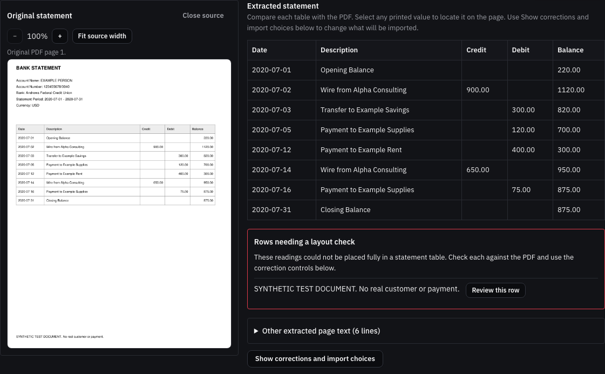
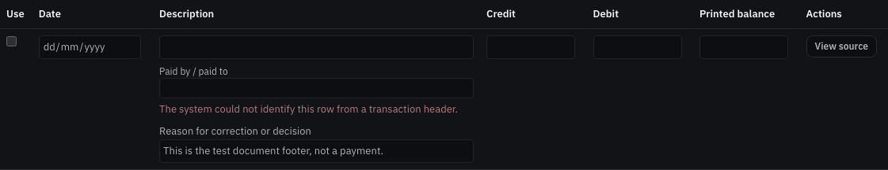
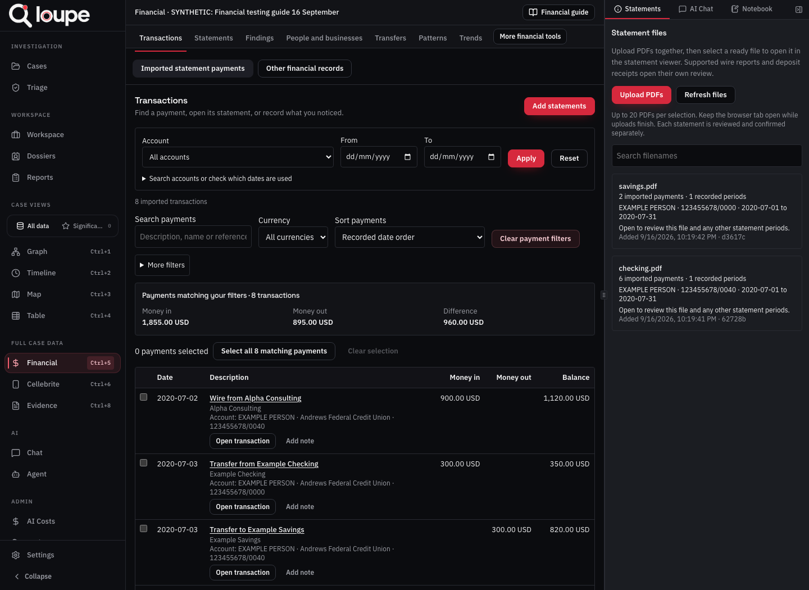

Loupe financial testing guide
Follow this guide in order for your first test of Financial. It starts with two invented statements and ends with a saved report that a colleague can open. You do not need previous experience of Loupe.
Updated: 16 September 2026. Use the full User guide for detailed explanations of each tool. This testing guide tells you what to try and what result to check. A result is only a pass after you have checked it yourself.
Contents
- Create a separate test case
- Upload both statements
- Check the statement and exclude its footer
- Leave the review and return
- Confirm both imports and check the totals
- Find payments and open their originals
- Correct a description and check the history
- Compare people and businesses
- Link payments to a name
- Compare a transfer
- Check trends and the payment graph
- Run the pattern and case-event checks
- Save payments and an investigation note
- Build, save and download a report
- Reopen the work with a colleague
- Test a real statement and a longer PDF
- Further tests for the tools you use
- Check the current size limits
- Record results and report a problem
1. Create a separate test case
You need the Loupe address, your own sign-in details, and permission to create or use a test case and upload files. Ask the case owner to provide a test case if you cannot create one.
- Open Loupe and select Sign in after entering your username and password.
- Select Cases in the left sidebar, then New.
- In Case Title, enter Financial test - your name - today's date.
- In Description, enter Invented statements for financial testing. Select Create Case.
- Open that case, then select Financial in the left sidebar. Check the case title at the top before uploading anything.
- Select Financial guide, then Testing guide to return here. Open testing guide in a separate tab lets you keep these instructions beside your case. Closing the guide returns you to the case underneath it.
- Download checking.pdf and savings.pdf to a folder you can find. Alternatively, download the test pack and extract its files first. Upload the PDFs, not the ZIP.
Expected: you have a new empty case and the two PDFs. Use your own case so another tester's changes do not alter your results. These PDFs contain no real customer or payment data.
2. Upload both statements
- Close the guide and open Statements.
- Select Statement files. A file list opens on the right.
- Select Upload PDFs. In your computer's file chooser, select both checking.pdf and savings.pdf, then confirm the choice.
- Keep the browser tab open while the files upload and are read. Wait until each file says Ready to review.
- Select checking.pdf in that list.
Expected: both filenames appear. The checking statement opens with its original PDF beside its extracted table. Uploading alone does not put payments into Transactions; you confirm each statement in step 5.
If a file says Read statement, select that action. If it says Retry reading, use that action on the existing file. After a connection failure, select Refresh files and check whether it arrived before uploading it again.
- In Review checking.pdf, compare the extracted table with the original. It should retain Date, Description, Credit, Debit and Balance, including blank cells.
- Select the printed 900.00 credit. The source viewer should locate that value in the original. If needed, use Fit source width to make the page readable.
- Check these details: holder EXAMPLE PERSON, checking account ending 0040, currency USD, and period 1 July to 31 July 2020. The opening balance is 220.00 and the closing balance is 875.00.
- Find Rows needing a layout check. These sample files currently flag the line SYNTHETIC TEST DOCUMENT. No real customer or payment. It is the footer printed at the bottom of the PDF, not a payment.
- Beside that footer, select Review this row. The correction controls open at the matching row.
- Clear the checkbox in the Use column for that footer only.
- In its Reason for correction or decision, enter This is the test document footer, not a payment. Do not invent a date or amount for it.
- Check the import count. It should now say 6 transactions and offer Confirm import of 6 transactions. Opening and closing balances must remain outside that count. Do not confirm yet; first try step 4.
Expected: the table still shows the original statement. The footer remains available as an excluded reading, with your explanation. The six actual payments remain selected. If the footer is already excluded in a later build, check that there are six payments and continue without changing it.

This is the checking PDF supplied with this guide. The flagged footer is separate from its payment table.

Clear Use on the footer row and record why. The excluded footer must not become a seventh payment.
For a wrong payment value, use Edit import values or Show corrections and import choices. Correct the field against the original and give a reason. For this exercise, leave the correct payment amounts unchanged. If any other line is flagged, inspect it before importing and record the unexpected result in your test notes.
4. Leave the review and return
- While the checking statement is still unconfirmed, open Transactions, then return to Statements.
- Reopen checking.pdf from Statement files if necessary.
- Check that the footer is still excluded and its reason remains.
- Refresh this same browser tab. Reopen the statement if needed and check the same two details again.
- Open savings.pdf from the file list, then return to checking.pdf. The checking review should still be present.
Expected: changing financial tabs, switching files and refreshing the same browser tab do not lose your review. Closing the browser tab can discard unfinished drafts. A saved import, finding or report is kept with the case; an unfinished browser draft is not shared with colleagues.
5. Confirm both imports and check the totals
- In the checking review, select Confirm import of 6 transactions once. Wait for the outcome. Its payments should become available in Transactions.
- Return to Statements, open Statement files, then select savings.pdf.
- Check its account ending 0000, USD currency and July 2020 period. Its opening balance is 50.00 and closing balance is 355.00.
- Exclude the same test document footer using step 3. Check that only the 300.00 transfer and 5.00 interest payment are selected.
- Select Confirm import of 2 transactions once.
- Open Transactions, choose Imported statement payments, select Reset in the account/date filter, then Clear payment filters beside the search controls. This removes earlier searches and restrictions.
- Check the total count and the figures below.
Expected: eight current transactions, with combined money in of USD 1,855.00, money out of USD 895.00, and difference of USD 960.00. The difference is money in minus money out, not a closing account balance. The transfer has one entry leaving checking and another entering savings.
Select checking under Account, then Apply to check its six payments. Repeat for savings and its two payments. Select Reset afterwards to return to both accounts.
If confirmation appears to fail, reopen the file and check its imported count before trying again. Do not repeatedly click confirmation or upload more copies to make the count change.

Your new test case should contain these eight payments before any further test adds or excludes a transaction.
6. Find payments and open their originals
- In Search payments, enter Example Supplies.
- Check that two outgoing payments remain: USD 120.00 on 5 July 2020 and USD 75.00 on 16 July 2020. Together they total USD 195.00.
- Beside the USD 120 payment, select Open transaction. Check its date, amount, account and source filename.
- Select Open source file. Compare it with the USD 120 debit in checking.pdf. Close the source viewer and transaction details when finished.
- Open another financial tab, return to Transactions, then refresh the browser. Check that your Example Supplies search remains.
- Select Clear payment filters. Use More filters, choose USD if needed, and set both the minimum and maximum amount to 120. Check that the USD 120 outgoing payment is the result. Clear the filters again afterwards.
Expected: each payment leads to the correct original file and value. Searching or changing tabs does not change the payment itself. If a value has no stored page position, the app must explain that rather than highlighting an unrelated location.
7. Correct a description and check the history
This changes only wording, so the expected money totals remain the same.
- Find the USD 120 payment again and select Open transaction, then Correct a value.
- Change Description to Payment to Example Supplies - test correction. Leave every date, amount, direction and balance unchanged.
- Select Preview correction. Check that the proposed change is only the description.
- Enter Checking the correction workflow on synthetic data in Reason for correction.
- Select Record correction and wait for the result.
- Reopen the payment. Check the new description, its previous reading and its unchanged original PDF.
- Open More financial tools, then Change history. Find your correction and check its reason and before/after readings.
- Return to Transactions, reset the filters and confirm there are still eight current transactions with the totals from step 5.
Expected: the description changes, its history is retained, and the correction does not add a ninth current payment or change totals. A saved report made before a later correction retains its earlier captured values.
8. Compare people and businesses
- Open People and businesses. Choose all accounts and July 2020 if you have retained narrower filters, then select Apply.
- If necessary, open Analysis settings, statement coverage and downloads and choose All imported payments.
- Find Alpha Consulting and select its View payments button.
- Check that the payments are USD 900.00 on 2 July and USD 650.00 on 14 July, totalling USD 1,550.00 incoming.
- Open either payment and follow its source.
- Return to the names and inspect Example Supplies. Its two outgoing payments should still total USD 195.00.
Expected: the displayed totals can be explained by the individual payments you open. No amount is counted twice because you corrected a description.
9. Link payments to a name
This checks the decision-saving controls. The invented statement already uses a consistent name; this is practice for cases with differing spellings.
- In People and businesses, open Link different names for the same person or business, then Open payment identity review.
- Search for Alpha Consulting under Find payment names, descriptions or references.
- Select the two matching payments. Check the count before continuing.
- Under Person or business, choose A new person or organisation and enter Alpha Consulting - test grouping in Name.
- In Why do these payments belong to this person or business?, enter Both invented statement descriptions name Alpha Consulting; testing a saved grouping.
- Select Save payment identity links. Check the saved links and history.
- In the analysis, select Combine names I have linked to the same person or business. Check that your named group contains those two payments and USD 1,550.00 incoming.
- Expand Names printed on statements to check that Alpha Consulting remains recorded as the original name. Switch the grouping option off to return to the printed-name view.
Expected: the grouping is saved without rewriting the statement descriptions, original files or payment amounts. If a save response is lost, reload the current links and check whether it saved before retrying.
10. Compare a transfer
- Open Transfers. Set From date to 1 July 2020 and To date to 31 July 2020.
- Choose All imported payments and leave Maximum days between payments at 3 days.
- Select Find possible transfers.
- Find the pair for USD 300.00 on 3 July: outgoing from checking and incoming to savings. Open both source readings.
- Select that pair. Under Why do you think these payments are transfers?, enter The two invented statements show the same USD 300 transfer on 3 July between these accounts.
- Select Compare totals using these transfers. Inspect the selected pair and the account comparison.
- Use Save this analysis with a note to keep it, with the name Test transfer between checking and savings and your observation.
Expected: the pair contains exactly the two USD 300 entries. The comparison and explanation can be reopened in Findings. Transactions still contains eight entries; saving a transfer comparison does not delete either side from the bank record.
11. Check trends and the payment graph
- Open Trends, select all accounts for July 2020 and select Apply.
- Under Group payments by, choose monthly. Select Show totals if necessary.
- Check July's USD totals against step 5. Open the payments behind the period and inspect a source.
- Open More financial tools, then Payment graph. Apply the same account/date choice and select Show connections if needed.
- Search for Example Supplies under Find an account or name, then select the matching name under Choose an account or name.
- Select View selected connections and check its two payments. Open one to confirm its source.
- Select Show all connections to return to the complete selected account/date range.
Expected: the chart and graph lead to the payments that explain them. A line in the graph is not a new payment. Both recorded sides of a transfer remain available.
12. Run the pattern and case-event checks
- Open Patterns, then Review patterns if the payment-claim form is showing.
- Apply all accounts and July 2020. Choose All imported payments. Leave the optional split-payment amount blank and cross-account path checking off for this first run.
- Select Find patterns. Check the result or explicit no-result message. A small test set need not contain every type of pattern; do not mark a failure merely because a particular pattern is absent.
- If a result appears, open its supporting payments and check the stated dates and amounts.
- Open More financial tools, then Payments and case events. Apply all accounts and July 2020, then select Load payments and case events.
- Check that the eight payments are available. A new case with no events can legitimately show zero case events. Use the next-page control if needed to reach every payment.
Expected: the tools return results or explain a problem. A blank screen, endless loading indicator or unrelated payment is a failure. Case-event amounts must not increase transaction totals.
13. Save payments and an investigation note
- Return to Transactions. Clear earlier selections if present, then search for Example Supplies.
- Tick the two payments, or use Select all 2 matching payments and check that the selection count is two. Review selected payments lets you check what is included.
- Select Save selection with a note.
- In Name for this selection, enter Example supplier payments.
- In What did you notice?, enter Two payments to Example Supplies total USD 195. Request the invoices and check what was supplied.
- Select Save payments and note and wait for Selection saved.
- Close the dialog, open Findings, and find Example supplier payments. Check its note, two linked payments and sources.
- Return to Transactions, clear the search and select Add note beside the outgoing USD 300 transfer.
- In Your transaction note, enter Check the corresponding USD 300 receipt in the savings account. Select Save investigation note.
- Check that this second note also appears in Findings. Refresh and reopen both notes.
Expected: both notes and their payment links remain after refresh. They are saved case work, not just text left in your browser.
14. Build, save and download a report
- In Findings, tick Include in report for Example supplier payments and your transaction note from step 13.
- Select Build report. Check that it shows two selected notes.
- Enter First financial test report as Report title.
- In Introduction, enter Testing saved findings and original statement references using invented payments.
- Use Move up or Move down to place the supplier note first. Select Preview report and read both notes and their linked payments.
- Select Save report to case. Wait for Report saved to this case before closing it.
- Refresh. In Findings, find your report and select Open financial report. It is also available under Reports in the main sidebar, in Financial reports.
- Select Download readable report. Open the HTML file in a browser and check its title, introduction, notes and payments. The browser's Print command can save a PDF if you need one.
- Back in the saved report, expand Supporting file references. Tick Include the supporting PDFs in the download package, then select Download report package with PDFs.
- Extract the ZIP into one folder and open report.html. Follow its file links. Keep the other downloaded files with it.
Expected: the report reopens from the case and the downloaded copy contains both notes and the checking PDF referenced by their payments. Savings may be absent because these two notes concern checking transactions. A source used by both notes should be included once. The download must not report success while omitting a required file.
A payment can appear in several notes. Do not add every note's total together as if those were different payments. The case's transaction totals remain the reference for money in and out.
15. Reopen the work with a colleague
- Give a colleague who already has access to this test case its name and the report title. Do not share your password.
- Ask them to sign in with their own account, open the case, select Financial, then Findings.
- Ask them to open First financial test report, read both notes and open a linked payment's source.
- Check that they see the saved descriptions and explanations. They should not need your browser tab or computer.
- If they have read-only access, check that they can inspect the records but cannot confirm imports, correct payments or save changes.
Expected: saved case work can be reopened by the authorised colleague. Your unfinished selections and form drafts are not shared. Mark this test Not run if no colleague is available; do not count your own second browser tab as another person's access test.
16. Test a real statement and a longer PDF
Use a separate test case. Keep the invented eight-payment case unchanged for comparing results later.
- Before upload, note the real statement's account, currency, dates, number of actual payments, opening balance and closing balance from the original. Keep those notes separate from Loupe's extraction.
- Upload a copy through Statements. Compare the extracted table with the original, including blank columns, minus signs, refunds, balance-only rows and wrapped descriptions.
- For a document with several pages, use Next page, Previous page and the Page chooser. Check the first, middle and last pages. The viewer uses PDF page numbers; these can differ from numbers printed inside the document.
- If a file contains several statement periods or accounts, choose each recognised section separately. Check that edits made in one do not appear in another.
- Correct a flagged value only when you can read it in the source. If it remains unclear, try Read the statement again or record the unresolved issue. Do not use a guessed amount to make a warning disappear.
- Compare the proposed payment count with your own count. Inspect any difference, including duplicate pages and headings mistaken for payments, before confirming.
- After confirmation, select that account and date range in Transactions and compare its payments and totals with your notes. Open sources from the first, middle and last pages.
- Switch files and tabs, refresh, then reopen the statement and a payment.
Expected: every difference you find is explainable and every imported payment leads back to the correct original. Agreement on a closing balance alone does not prove that all payments were read correctly. Record uncertain or missing items even if the import completed.
For a credit card, compare charges, credits and Opening amount owed / Closing amount owed separately from bank money in and out. For a wire report or deposit receipt, expect its own supporting-document review and a saved finding. Do not count the receipt as an extra bank payment merely because the corresponding statement was also uploaded.
Do these in additional test cases or after recording the eight-payment baseline. Use the matching User guide chapter for the complete procedure. Record tests you did not attempt as Not run.
A. Exclude and restore a payment
- Open an invented payment and select Exclude from totals. Enter a clear test reason and confirm the permitted action.
- Check that it leaves current totals and remains in More financial tools > Excluded transactions with its source and explanation.
- Use its inclusion action to restore it, giving a second reason.
- Confirm that the eight-payment count and original totals return. Inspect Change history for both decisions.
B. Repeated copies and missing periods
- In a separate case, upload two different copies of the same statement, such as a native PDF and a scan supplied for this test. Open their originals before treating them as duplicates.
- Follow Review duplicates in the User guide to compare them, explain a decision and check its effect on totals.
- Restore the decision and check that its history is retained. Do not delete the originals to make totals agree.
- In Statements, open Review accounts, choose the account and inspect its listed periods. Apply a requested period that extends beyond the statement you supplied.
- Check that unavailable coverage is described as missing or unknown, rather than as a period with no payments.
C. Trace funds
- Open More financial tools > Trace funds > Trace one account. Choose the invented checking account and July dates, then Apply account and dates and Load tracing inputs.
- Enter its USD 220 opening amount and cite the invented statement as the basis. Attribute the USD 900 deposit to a claim labelled Training example, with an explanation that this is a hypothetical test.
- Check the movement order, explain it, select the methods to compare and select Calculate conditional scenario.
- Use Save this calculation in Findings, name it and select Save calculation and note.
- Reopen Open saved calculation in Findings. Check the opening amount, deposit attribution, assumptions and source links. Changing an input must require a new calculation before saving a revised result.
- To test the separate cross-account method, use Trace between accounts and the User guide's complete procedure, supplying both opening balances and the two sides of the USD 300 transfer.
D. Payment claims and other financial records
- Follow Compare a stated payment with the records in the User guide, using an invented claim that Alpha Consulting paid USD 900 on 2 July 2020 and a supporting test document. Keep this separate from the bank import.
- Run the comparison and check that the correct payment is available, with its date, amount, currency and source.
- Record your response with a reason and the supporting payment; reopen the saved note.
- If the case contains Other financial records, open a record and its original. Follow that guide chapter to test an explained amount correction. Check that its original amount and reason remain available and that it does not become a bank transaction.
E. Asset and indirect calculations
- Open Trace funds and choose the relevant asset or indirect review method described in the User guide.
- Use invented amounts with written source explanations. Calculate the result and save it in Findings.
- Refresh and reopen the saved workpaper. Check every entered value and its source.
- Make a revised copy, change one amount, calculate again and save the revision. Check that the original saved calculation remains available.
- Include both versions in a report and explain why their results differ.
18. Check the current size limits
A case can contain more payments than one analysis permits. These are separate limits, not a single maximum case size.
The larger imports, selections, graph and reports were checked locally with a 5,000-payment statement, a 2,700-payment case and a 50-finding report. These figures describe earlier development checks, not results your team has already obtained on the deployed server. General response and file-size bounds still apply.
A refused check must explain why. It is not a finding that there are no matches. Each smaller date check covers only those dates; splitting a case into separate ranges can miss relationships crossing their boundaries. Whole-case transfer, timeline and pattern work beyond these limits remains unfinished.
19. Record results and report a problem
Copy this table into your team's test notes, or print this guide and fill it in. Use Pass, Fail, Blocked or Not run. Record the actual result; do not mark a pass just because a button could be clicked.
Tester: __________ Date: __________ Case name: __________
For each failure, record:
- Case name, filename and page, and the affected payment if relevant.
- The numbered test above and the exact button or field used.
- What you expected and what actually appeared, including counts or amounts.
- A screenshot and the exact error message.
- Whether switching tabs or refreshing changed the result.
- Whether the action saved anything before showing the problem. Check the case before repeating an import or save.
Keep private real statements and their screenshots within your team's approved channels. A synthetic test passing does not establish extraction accuracy for every real statement. Keep your manually checked real-file notes so the team can compare them with the imported records.